openai/gpt-4.1-mini
mean reward 0.799 · compile rate 94% · 84 valid rollouts. Blue = reference; green ≥ 0.9, orange ≥ 0.4, red below. Hover a tile for the generated OpenSCAD.
L1 · example 0 · mean 1.00 · max 1.00
Create an upright cylinder of height 55mm and diameter 20mm.

;")
L2 · example 1 · mean 1.00 · max 1.00
Create a 75mm by 65mm plate of thickness 11mm with a centered 30mm-diameter through-hole.

 {
cube([75, 65, 11], center=false);
translate([75/2, 65/2, 0]) cylinder(h=12, r=15, center=false);
}")
 {
cube([75,65,11]);
translate([75/2,65/2,0])
cylinder(h=11, r=15, center=false);
}")
 {
cube([75, 65, 11], center=false);
translate([75/2, 65/2, 0]) cylinder(h=11, r=30/2, center=false);
}")
 {
cube([75,65,11]);
translate([75/2,65/2,0]) cylinder(h=11, r=15);
}")
L3 · example 2 · mean 0.67 · max 0.81
An L-shaped bracket 20mm wide: a horizontal leg 65mm long and a vertical leg 30mm tall, both 10mm thick, joined at a right angle. The horizontal leg has a circular hole of radius 4mm through its center, drilled vertically.

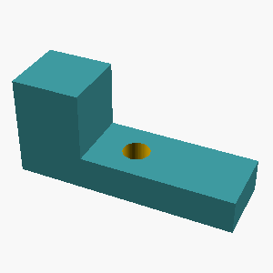
 {
// Horizontal leg
translate([0, 0, 0])
cube([65, 20, 10]);
// Vertical leg
translate([0, 0, 10])
cube([20, 20, 30]);
// Hole in horizontal leg, centered
translate([65/2, 20/2, 0])
cylinder(h=20, r=4, center=false);
}
difference() {
union() {
// Horizontal leg
translate([0, 0, 0])
cube([65, 20, 10]);
// Vertical leg
translate([0, 0, 10])
cube([20, 20, 30]);
}
// Hole in horizontal leg, centered, go completely through horizontal leg thickness
translate([65/2, 20/2, 0])
cylinder(h=12, r=4, center=false);
}")
 {
union() {
cube([65,20,10]);
translate([0,0,10])
cube([20,20,30]);
}
translate([65/2, 20/2, 5])
cylinder(h=20, r=4, center=true);
}")
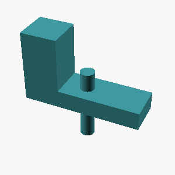
L4 · example 3 · mean 0.85 · max 1.00
A monument-like shape: a circular base plate of radius 40mm and thickness 10mm, with a cylindrical post of radius 8mm and height 50mm standing centered on top of it, and the post capped with a hemispherical dome of radius 8mm.

 {
// Base plate
cylinder(h=10, r=40);
// Cylindrical post
translate([0,0,10])
cylinder(h=50, r=8);
// Hemispherical dome
translate([0,0,60])
sphere(r=8);
}")
 {
// Base plate
cylinder(h=10, r=40);
// Cylindrical post on top of base
translate([0,0,10])
cylinder(h=50, r=8);
// Hemispherical dome on top of post
translate([0,0,60])
sphere(r=8);
}")
 {
// base plate
cylinder(h=10, r=40);
// post
translate([0,0,10])
cylinder(h=50, r=8);
// hemispherical dome
translate([0,0,60])
sphere(r=8);
}
monument();")
 {
// Base plate
cylinder(h=10, r=40);
// Post on top of base plate
translate([0,0,10])
cylinder(h=50, r=8);
// Hemispherical dome on top of post
translate([0,0,60])
sphere(r=8);
}")
L1 · example 4 · mean 1.00 · max 1.00
A solid sphere with a radius of 20mm.

;")
L2 · example 5 · mean 0.78 · max 0.79
A solid box 30mm x 20mm x 20mm with a rectangular notch 8mm wide and 7mm deep cut into the middle of its top face, running through the full depth of the box.

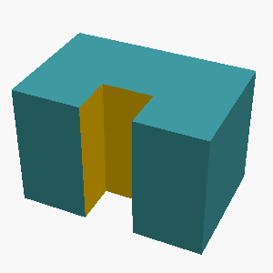
 {
// Solid box
cube([30,20,20]);
// Notch
translate([11,6.5,0])
cube([8,7,20]);
}")
 {
// Solid box
cube([30,20,20]);
// Notch: 8mm wide (x), 7mm deep (y), full height (z)
translate([(30 - 8)/2, (20 - 7)/2, 0])
cube([8,7,20]);
}")
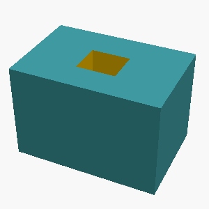
L3 · example 6 · mean 0.92 · max 1.00
A solid box 60mm wide (x), 30mm deep (y), and 30mm tall, with a 6mm-radius hole drilled vertically through the center of the entire part; and a cylindrical boss of radius 6mm sticking out 14mm horizontally from the center of its +X side face. The part sits on the z=0 plane, centered on the Z axis.

 {
// Main box
translate([-30, -15, 0])
cube([60, 30, 30]);
// Vertical hole through center
translate([0, 0, 0])
cylinder(h=30, r=6, center=false);
}
union() {
// everything from the difference above
difference() {
translate([-30, -15, 0])
cube([60, 30, 30]);
translate([0, 0, 0])
cylinder(h=30, r=6, center=false);
}
// cylindrical boss sticking out +X side face
// The +X side face is at x=+30 (since box is centered at x=0, width=60)
// The boss is centered on the side face (y=0), at mid-z=15
translate([30, 0, 15])
rotate([0,90,0]) // rotate to point in +X direction
cylinder(h=14, r=6, center=false);
}")
 {
// Main box
translate([-30, -15, 0])
cube([60, 30, 30]);
// Vertical hole through center
translate([0, 0, 0])
cylinder(h=30, r=6, center=false);
}
// Cylindrical boss sticking out +X side face center
translate([30, 0, 15])
rotate([0, 90, 0])
cylinder(h=14, r=6, center=false);")
 {
// Main box
translate([-30, -15, 0])
cube([60, 30, 30]);
// Vertical hole through the center
translate([0, 0, 0])
cylinder(h=30, r=6, center=false);
}
union() {
// Main box with hole (difference above)
difference() {
translate([-30, -15, 0])
cube([60, 30, 30]);
translate([0, 0, 0])
cylinder(h=30, r=6, center=false);
}
// Cylindrical boss on +X face, sticking out 14mm
translate([30, 0, 15]) // +X face center at (30,0,15)
rotate([0, 90, 0]) // rotate around Y to point along +X
cylinder(h=14, r=6, center=false);
}")
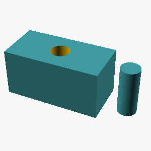
L4 · example 7 · mean 0.42 · max 0.63
A solid box 65mm wide (x), 50mm deep (y), and 15mm tall, with 6 holes of radius 2mm drilled vertically through it, evenly spaced on a circle of radius 19.4mm around the center, the first hole on the +X axis; and a cone of base radius 6mm and height 35mm standing centered on its top face, apex up; and a 3mm-radius hole drilled vertically through the center of the entire part; and a cylindrical boss of radius 4mm sticking out 16mm horizontally from the center of its +X side face. The part sits on the z=0 plane, centered on the Z axis.

 {
// Box
cube([box_x, box_y, box_z], center=true);
// 6 holes evenly spaced on circle radius 19.4, first hole on +X axis
for(i = [0 : num_holes-1]) {
angle = i*360/num_holes;
x = hole_circle_radius * cos(angle);
y = hole_circle_radius * sin(angle);
translate([x, y, -1]) cylinder(h=box_z+2, r=hole_radius);
}
// Center hole through entire part (box + cone)
translate([0, 0, -1]) cylinder(h=box_z + cone_height + 2, r=center_hole_radius);
// Cone on top face, apex up, base centere")
 {
// Base box
cube([65,50,15], center=false);
// Cone on top face (z=15), apex up (+Z)
translate([32.5,25,15])
rotate([180,0,0]) // apex up means cone pointing up, default cone is pointing +Z; actually cone() in OpenSCAD points +Z apex?
// Actually, OpenSCAD's cone apex is at top, pointing +Z by default, so no rotation needed.
cone(r1=6, r2=0, h=35);
// Boss on +X center side face (x=65)
translate([65,25,7.5]) // center on y=25, z=7.5 (half height)
rotate([0,90,0]) // align cylinder axis along +X
cylinder(h=16, r=4);
}
module holes() {
// 6 holes radius 2mm, vertical thru box, placed evenly around circle radius 19.4mm on XY plane, first hole on +X
for(i=[0:5]) {
angle = i*")
 {
// Solid box
cube([box_x, box_y, box_z], center=false);
// Move box so center Z is at 0
// cube() origin is corner, so translate to z=0
// But since we want part sits on z=0 plane, centered on z axis
// meaning the box is from z=0 to z=15, so origin at bottom
}
module holes_on_circle() {
for(i = [0 : num_holes - 1]) {
angle = 360 / num_holes * i;
x = hole_circle_r * cos(angle);
y = hole_circle_r * sin(angle);
translate([x, y, 0])
cylinder(h=box_z + 50, r=hole_r, center=false);
}
}
module center_hole() {")
L1 · example 8 · mean 1.00 · max 1.00
A solid cone 55mm tall with a base radius of 25mm, point facing up.

;")
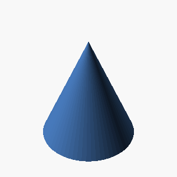
L2 · example 9 · mean 0.75 · max 1.00
Create a box-shaped tray 45mm x 60mm x 50mm on the outside, hollowed from the top leaving 3mm thick walls and base.

 {
// Outer box
cube([45, 60, 50]);
// Inner hollow space
translate([3, 3, 3])
cube([45 - 6, 60 - 6, 50 - 3]);
}")
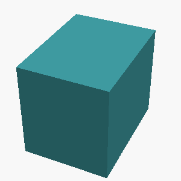
 {
// Outer box
cube([45, 60, 50]);
// Inner hollow
translate([3, 3, 3])
cube([45-6, 60-6, 50-6]);
}")
 {
// Outer box
cube([45,60,50]);
// Inner hollow
translate([3,3,3])
cube([45-6, 60-6, 50-6]);
}")
L3 · example 10 · mean 0.25 · max 0.58
A solid hexagonal prism 40mm tall, 60mm across the flats, with two flats parallel to the x axis, with a hemispherical dome of radius 21mm centered on its top face; and a 5mm-radius hole drilled vertically through the center of the entire part. The part sits on the z=0 plane, centered on the Z axis.

 {
// Calculate radius of the circumscribed circle for the hexagon
r = across_flats / (2 * cos(30));
// Hexagon centered at origin with two flats parallel to the x-axis
prism_points = [for (i = [0 : 5])
[r * cos(i * 60), r * sin(i * 60)]
];
linear_extrude(height)
polygon(prism_points);
}
difference() {
// Hexagonal prism 40mm tall, centered at z=0
hex_prism(60, 40);
// Hemispherical dome radius 21mm centered on top face (z=40)
translate([0, 0, 40])
sphere(r=21);
// 5mm radius hole through center vertically
translate([0, 0, 0])
cylinder(h=40+21, r=5, center=false);
}")
 {
r = flat_to_flat / 2 / cos(30);
rotate(30)
cylinder(h=height, r=r, center=false);
}
module dome(radius) {
translate([0,0,radius])
sphere(r=radius);
}
flat_to_flat = 60;
height = 40;
dome_radius = 21;
hole_radius = 5;
// Prism with dome on top
union() {
hex_prism(flat_to_flat, height);
translate([0,0,height])
dome(dome_radius);
}
// Hole through entire part
difference() {
union() {
hex_prism(flat_to_flat, height);
translate([0,0,height])
dome(dome_radius);
}
translate([0,0,-1]) // start slightly below to ensure full cut
cylinder(h=height + dome_radius*2 + 2, r=hole_radius, center=false);
}")
; // side length of hexagon
module hex_prism(height) {
// hexagon with two flats parallel to x-axis, centered at origin
// points for hexagon
polygon(points=[
[ side/2 , r ],
[-side/2 , r ],
[-side , 0 ],
[-side/2 , -r ],
[ side/2 , -r ],
[ side , 0 ],
]);
linear_extrude(height)
children();
}
difference() {
union() {
// hexagonal prism 40 mm tall
hex_prism(40);
// hemispherical dome of radius 21 mm centered on top face
translate([0,0,40])
sphere(r=21);
}
// drill 5 mm radius hole through entire part
translate([0,0,-1])
cylinder")
L4 · example 11 · mean 0.76 · max 0.96
A solid upright cylinder of radius 30mm and height 50mm, with a hemispherical dome of radius 6mm centered on its top face; and a horizontal hole of radius 14mm drilled along the X axis through the whole part at half its height, centered in Y; and 6 holes of radius 2mm drilled vertically through it, evenly spaced on a circle of radius 16.3mm around the center, the first hole on the +X axis. The part sits on the z=0 plane, centered on the Z axis.

 {
// Main cylinder
cylinder(h=50, r=30);
// Hemispherical dome on top
translate([0,0,50]) sphere(r=6);
}
module horizontal_hole() {
// Hole through along X axis at half height (z=25), centered in Y and Z
translate([0,0,25])
rotate([0,90,0]) cylinder(h=2*30+20, r=14, center=true); // length long enough to go fully through
}
module vertical_holes() {
radius = 16.3;
hole_r = 2;
hole_h = 50 + 12; // slightly longer than total height to ensure through
for(i = [0:5]) {
angle = i * 360/6;
x = radius * cos(angle);
y = radius * sin(angle);
translate([x,y,0]) cylinder(h=hole_h, r=hole_r);
}
}
difference() {
part();
horizontal_hole();
vertical_holes();
}")
 {
// Solid upright cylinder of radius 30mm, height 50mm
cylinder(h=50, r=30);
// Hemispherical dome of radius 6mm centered on top face (z=50)
translate([0,0,50]) sphere(r=6);
}
module horizontal_hole() {
// Horizontal hole radius 14mm, drilled along X axis through entire part height + hemisphere extension
// Part height total = 50 + 6 = 56
// Cylinder length longer to fully cut through the shape
translate([-100,0,28]) // Centered at z=28 (half height of part including hemisphere)
cylinder(h=200, r=14);
}
module vertical_holes() {
// 6 holes of radius 2mm drilled vertically, evenly spaced on circle radius 16.3mm, first hole at +X axis
for (i = [0 : 5]) {
angle = 360/6 * i;
x = 16.3 * cos(angle);")
 {
// Upright cylinder
cylinder(h=50, r=30);
// Hemispherical dome centered on top face
translate([0, 0, 50])
sphere(r=6);
}
module horizontal_hole() {
// horizontal hole diameter 28 (radius 14) along X
translate([0, 0, 25])
cylinder(h=100, r=14, center=true);
}
module vertical_holes() {
// 6 holes radius 2 on circle radius 16.3 on XY plane at all Z
for (i = [0 : 5]) {
angle = i * 60;
x = 16.3 * cos(angle);
y = 16.3 * sin(angle);
translate([x, y, 0])
cylinder(h=100, r=2, center=false);
}
}
difference() {
main_part();
horizontal_hole();
vertical_holes();
}")
 {
union() {
// Cylinder
cylinder(h=50, r=30, center=false);
// Hemispherical dome
translate([0,0,50])
sphere(r=6, center=true);
}
}
difference() {
main_part();
// Horizontal hole along X at half height (z=25)
translate([0,0,25])
cylinder(h=72, r=14, center=true); // 72 > max dimension of cube to ensure through hole
// 6 vertical holes on circle radius 16.3, first at +X axis
for(i = [0:5]) {
angle = i * 60;
x = 16.3 * cos(angle);
y = 16.3 * sin(angle);
translate([x,y,0])
cylinder(h=60, r=2, center=false);
}
}")
L1 · example 12 · mean 1.00 · max 1.00
A solid rectangular box 70mm wide, 25mm deep, and 50mm tall.

;")
L2 · example 13 · mean 0.84 · max 1.00
Create a box-shaped tray 70mm x 55mm x 45mm on the outside, hollowed from the top leaving 5mm thick walls and base.

 {
cube([70,55,45]);
translate([5,5,5])
cube([70-10,55-10,45-5]);
}")
 {
// Outer box
cube([70, 55, 45]);
// Inner hollow
translate([5, 5, 5]) cube([70 - 2*5, 55 - 2*5, 45 - 5]);
}")
 {
// Outer box
cube([70, 55, 45]);
// Inner hollow
translate([5, 5, 5])
cube([70-10, 55-10, 45-10]);
}")
 {
// Outer box
cube([70,55,45]);
// Inner hollow space
translate([5,5,5])
cube([70-10,55-10,45-10]);
}")
L3 · example 14 · mean 0.39 · max 0.79
A solid hexagonal prism 15mm tall, 50mm across the flats, with two flats parallel to the x axis, with a 11mm-radius hole drilled vertically through the center of the entire part; and a square pad 32mm x 32mm and 5mm tall sitting centered on its top face. The part sits on the z=0 plane, centered on the Z axis.

 {
// Calculate radius of circumscribed circle
r = across_flats / (2 * cos(30)); // cos(30°) = sqrt(3)/2
// Create a hexagon with two flats parallel to the x-axis
// By default, polygon with 6 points and radius r, rotated 90° to have flats on x-axis
rotate(90)
cylinder(h=height, r=r, $fn=6);
}
difference() {
// Hexagonal prism
hex_prism(50, 15);
// Hole
translate([0, 0, 0])
cylinder(h=15+2, r=11, center=false, $fn=64); // +2 to ensure through cut
}
// Square pad on top face
translate([-16, -16, 15])
cube([32, 32, 5]);")
 {
// Compute radius of circumscribed circle around the hex
// across_flats = 2 * apothem = 2 * r * cos(30°)
// So radius r = across_flats / (2 * cos(30°))
r = across_flats / (2 * cos(30));
cylinder(h=height, r=r, center=false);
}
difference() {
// Hexagonal prism 15mm tall, centered at z=0 with base on z=0
translate([0,0,0])
hex_prism_across_flats(50, 15);
// Hole radius 11mm at center through entire height
translate([0,0,0])
cylinder(h=15, r=11, center=false);
}
// Square pad 32x32x5mm centered on top face
translate([-16, -16, 15])
cube([32, 32, 5], center=false);")
 {
// Hexagon parameters
h = 15; // height
across_flats = 50;
radius = across_flats / 2; // distance from center to flat
hole_radius = 11;
pad_size = 32;
pad_height = 5;
// Hexagon points with flats parallel to x-axis
// Using polygon with radius = 25 (across flats/2)
// The usual hexagon side length for given across flats: s = radius = 25
// We'll use circle with r=radius and polygon with 6 sides and rotate for flats parallel x-axis
// Create hex prism with flats parallel to x axis
rotate([0,0,0]) // No rotation needed as 0° polygon has flats parallel to x axis
difference() {
linear_extrude(height = h)
polygon(points =
[ for (i = [0:5])")
L4 · example 15 · mean 0.82 · max 1.00
A monument-like shape: a circular base plate of radius 30mm and thickness 8mm, with a cylindrical post of radius 20mm and height 25mm standing centered on top of it, and the post capped with a hemispherical dome of radius 20mm.

 {
// Base plate
cylinder(h=8, r=30);
// Post
translate([0,0,8])
cylinder(h=25, r=20);
// Hemispherical dome on top of post
translate([0,0,8+25])
sphere(r=20);
}")
 {
// Base plate
cylinder(h=8, r=30);
// Cylindrical post
translate([0,0,8]) cylinder(h=25, r=20);
// Hemispherical dome
translate([0,0,8+25]) sphere(r=20);
}
monument();")
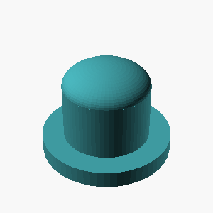
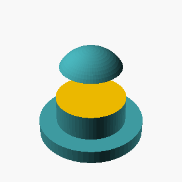
L1 · example 16 · mean 1.00 · max 1.00
Create an upright cone: base diameter 80mm, height 50mm, apex at the top.

L2 · example 17 · mean 0.73 · max 0.73
Create a box-shaped tray 55mm x 30mm x 60mm on the outside, hollowed from the top leaving 4mm thick walls and base.

 {
cube([55,30,60]);
translate([4,4,4])
cube([55-8,30-8,60-8]);
}")
 {
// Outer box
cube([55,30,60]);
// Inner hollow space
translate([4,4,4])
cube([55 - 8, 30 - 8, 60 - 8]);
}")
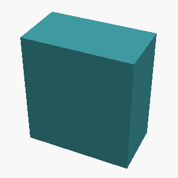
 {
cube([55,30,60]);
translate([4,4,4]) cube([55-8,30-8,60-8]);
}")
L3 · example 18 · mean 0.77 · max 0.99
A solid box 45mm wide (x), 40mm deep (y), and 25mm tall, with 3 holes of radius 2mm drilled vertically through it, evenly spaced on a circle of radius 14.2mm around the center, the first hole on the +X axis; and a cylindrical post of radius 5mm and height 40mm standing centered on its top face. The part sits on the z=0 plane, centered on the Z axis.

 {
// Main box
translate([-45/2, -40/2, 0])
cube([45, 40, 25]);
// Three holes, radius 2, height > box height to drill through
for (i = [0:2]) {
angle = i * 120;
x = 14.2 * cos(angle);
y = 14.2 * sin(angle);
translate([x, y, -1]) cylinder(h=27, r=2, center=false);
}
}
translate([0, 0, 25])
cylinder(h=40, r=5, center=false);")
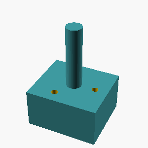
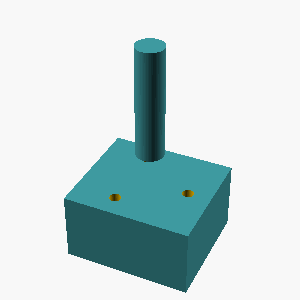
 {
difference() {
// Box
cube([45,40,25], center=true);
// Holes
for (i = [0:2]) {
angle = i * 120;
x = 14.2 * cos(angle);
y = 14.2 * sin(angle);
translate([x, y, -1]) // start below to fully cut through
cylinder(h=27, r=2);
}
}
}
module post() {
translate([0,0,25])
cylinder(h=40, r=5);
}
box_with_holes();
post();")
L4 · example 19 · mean 0.83 · max 1.00
A hexagonal prism (like a nut) 8mm tall, measuring 35mm across the flats, with a circular hole of radius 6mm drilled through its center along the axis.

 {
// The hexagon radius (distance from center to vertex)
// across flats = 2 * apothem = 35mm, so apothem = 17.5mm
// radius = apothem / cos(30°) = 17.5 / cos(30°) = 17.5 / (√3/2) = 20.154mm approx
r = 17.5 / cos(30);
difference() {
// Hexagonal prism
cylinder(h=8, r=r, center=false, $fn=6);
// Hole
translate([0, 0, -1]) // extend below to ensure through hole
cylinder(h=10, r=6, center=false);
}
}
hex_prism_with_hole();")
 {
// Calculate the circumradius of the hexagon from the flat-to-flat measurement
// flat-to-flat = 2 * apothem = 35mm --> apothem = 17.5mm
// circumradius R = flat-to-flat / cos(30°) / 2 = apothem / cos(30°)
// but actually circumradius = apothem / cos(30°)
// cos(30°) = sqrt(3)/2 = ~0.86602540378
apothem = 17.5;
R = apothem / cos(30);
difference() {
// Hexagonal prism
cylinder(h=8, r=R, center=false);
// Drill hole in the center
translate([0,0,-1])
cylinder(h=10, r=6, center=false);
}
}
hex_nut();")
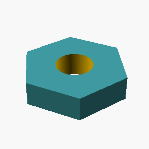
 {
// Side length of the hexagon based on 35mm across flats
// Across flats = 2 * side length
side = 35 / 2;
height = 8;
hole_radius = 6;
difference() {
// Hexagonal prism centered at origin, base on XY plane
linear_extrude(height)
polygon(points =
[ for(i = [0:5]) let(angle = 60*i)
[ side * cos(angle), side * sin(angle) ]
]
);
// Hole through center
translate([0,0,-1])
cylinder(h = height + 2, r = hole_radius);
}
}
hex_prism_with_hole();")
L1 · example 20 · mean 1.00 · max 1.00
A solid cylinder 30mm tall with a radius of 10mm, standing upright.